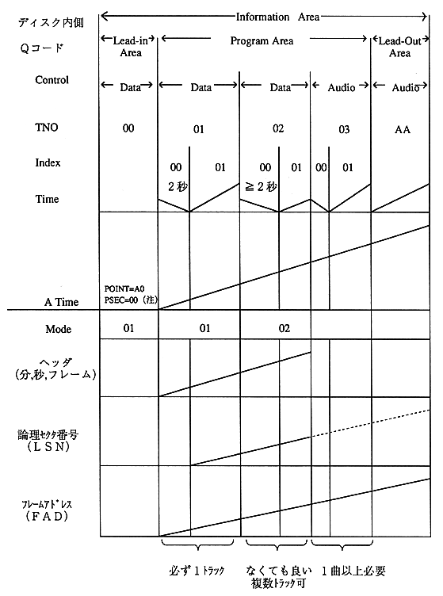

Figure 2.4 shows the relationship between the track structure and the access key to clarify the meaning of the frame address.

(Note) In the CD-ROM XA standard, PSEC = 20H when POINT = A0H, but in this Semi CD-ROM XA standard, PSEC = 00H.
Figure 2.4 General GAME-CD structure